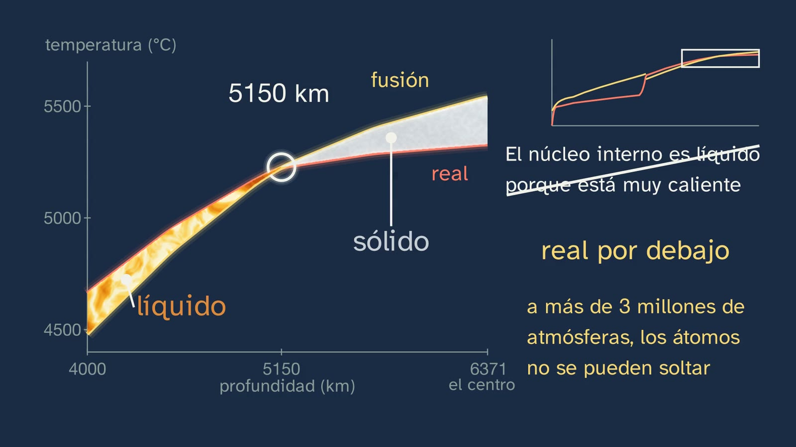

Two ways to slice Earth
In a nutshell
This is the class that closes the topic, and it does so with a question many people answer with a drawing: is there a sea of lava under your feet? It starts from the 2021 eruption on La Palma, in Spain's Canary Islands, and answers with the data students can already read: the records of the Fiji earthquake from class 3, now looked at in the sideways motion, where the S wave clearly arrives up to almost 100°. An S wave does not cross a liquid. So the mantle is solid rock, even though many drawings paint it orange.
To put this in order, the Earth is sliced in two ways, with two questions. What it is made of: going down with the PREM density, the jumps say where the material changes: crust, mantle and core, and the two crusts. How it behaves: going down with the speed of the S wave: lithosphere, asthenosphere, the rest of the mantle, liquid outer core and solid inner core.
Then come two questions that textbooks tend to settle with a sentence. How can a solid flow? The class gives the evidence: the plumb line in the Himalayas, Airy's roots and isostasy; the line Celsius had carved on a Baltic rock in 1731, now almost two metres above the water; the rise of Scandinavia, and the viscosity Haskell calculated from it. The answer is that it depends on how long the push lasts: a block calculated as a Maxwell body goes all the way back if it is pushed for a second, and stays deformed if it is pushed for a hundred thousand years. Why is the centre, the hottest part, solid? A single graph, the real temperature against the melting temperature from the surface to the centre, sorts out which layer is solid and which is liquid, why the asthenosphere is soft, how magma is born, why the outer core is liquid and why pressure makes the centre solid.
The class ends by putting the two cuts on one radius, where it can be seen that the Moho falls inside the lithosphere, with the dynamics of the planet and with the sum of the whole topic: what gives confidence is not one measurement, but independent paths that fit into a single Earth.
Objective. By the end, students will be able to compare the layer model by composition with the model by behaviour, explain that the mantle is solid even though it flows and why the inner core is solid even though it is so hot, and relate the structure to the dynamics of the planet.
What this sheet adds:
- the nuances the voice does not mention: how the two-line graph was made and how much of it is estimation, what the asthenosphere really is, why there is no sharp boundary at 100 km on the board, who carved the line and what Lyell measured, and why Repetti's story is not what some textbooks say;
- the mistakes to expect;
- the solutions to everything;
- an activity of about 15 minutes that no textbook offers: Haskell's sum, with a calculator, in which students try three viscosities, discover which one makes Scandinavia rise as much as it has risen and, if there is time, draw the two lines by hand;
- open resources to go further.
For readers outside Spain: the Bachillerato is the last two years of secondary school (ages 16–18), and ESO is the compulsory stage before it (ages 12–16). Spain's regions adapt the curriculum, which is why this sheet mentions the Comunitat Valenciana, Madrid, Galicia and Castilla y León; Bruño and SM are Spanish textbook publishers. The video is in Spanish, with English subtitles; the images on this sheet come from the video and keep their Spanish text: corteza is crust, manto is mantle, resto del manto is the rest of the mantle, núcleo is core (externo, outer; interno, inner), litosfera is lithosphere, astenosfera is asthenosphere, and temperatura real and temperatura de fusión are the real temperature and the melting temperature. In Spain the decimal separator is a comma (5,6 means 5.6); this English sheet uses points, commas for thousands, and writes powers of ten with × (3.16 × 10⁷, which in Spanish is written 3,16·10⁷).
Curriculum
Spain's Royal Decree 243/2022, Biology, Geology and Environmental Sciences, consolidated text in the Official State Gazette, BOE (the lab's copy, checked for the topic sheet). Our translation of the official Spanish text. The minutes are those of the video.
| Element | What the decree says | Where the class works on it |
|---|---|---|
| Core knowledge, block D | "Structure, composition and dynamics of the geosphere. Direct and indirect methods of study." | The whole class: composition (2:53), behaviour (6:06), the two models (19:38) and the dynamics (21:31) |
| Core knowledge, block A | "Hypotheses, questions, problems and conjectures: framing them from a scientific perspective." | Is the sea falling or is the land rising? (9:11); the sea-of-lava bet (2:05) |
| Core knowledge, block A | "The historical evolution of scientific knowledge: science as a collective, interdisciplinary endeavour in continuous construction." | From Pratt to Haskell (7:47) to (10:53); Celsius was wrong and his line proved useful (9:49) |
| Specific competence 1 | "To interpret and communicate scientific information and data, arguing about them precisely and using different formats…" | The real record section (5:16), the PREM curves (2:53) and (6:06) and the two lines (15:08) |
| Specific competence 3 | "To design, plan and carry out research projects following the steps of scientific methodologies…" | Working out how to tell two explanations apart (9:11) |
| Specific competence 4 | "To seek and use strategies to solve problems, critically analysing the solutions and answers found and reformulating the procedure if necessary…" | Reading the graph to explain each layer (16:03) to (18:14); the model's sum (21:55) |
| Criterion 1.1 | "To critically analyse concepts and processes related to the subject's knowledge, interpreting information in different formats (models, graphs, tables, diagrams, formulas, schemes...)." | The graphs at (2:53), (6:06) and (15:08), and the equation at (12:54) |
| Criterion 3.1 | "To ask questions, make predictions and formulate hypotheses that can be answered or tested using scientific methods…" | The bets at (2:05) and (9:11) |
| Criterion 4.1 | "To solve problems or explain biological, geological or environmental processes, using varied resources such as one's own knowledge, data and information gathered, logical reasoning…" | The two lines (16:03) to (18:14) and this sheet's activity |
| Criterion 4.2 | "To critically analyse the solution to a problem about biological, geological or environmental phenomena and modify the procedures used or the conclusions reached if that solution is not viable or in the light of new data provided or gathered later." | Lyell corrects Celsius (9:49); the ice, a new explanation (10:19) |
What this sheet's activity adds. Criterion 3.4, "To interpret and analyse the results obtained in a research project, using mathematical and technological tools when necessary, recognising their scope and limitations…": students calculate a model, compare it with what was measured and say where it falls short.
How the class is built
Video chapters
About twenty-five minutes, in fourteen chapters. It is a theory class: Nil is at his desk, without a lab coat. He appears on camera four times: in the greeting (0:00), with the hook (1:57), halfway (7:38) and in the goodbye (24:38).
| Part | What happens | Why this way |
|---|---|---|
| What you already know (0:14) | Which waves can't cross a liquid? The particle grids from class 4. | To bring back the tool that answers today's question. |
| The solutions (0:38) | The three from class 4, each with its question: liquid iron is dense and only resists being squeezed; the ray moves away on entering faster rock; the four discoveries, each at its date. | To close what was pending without dragging it out. |
| A sea of lava? (1:57) | La Palma, 2021. Where did so much lava come from? The bet: a sea of lava or solid rock. The Earth splits into two questions (2:33). | A hook with its context, close to home, that is answered twice in the class. |
| What it's made of (2:53) | Going down with density: the Moho, the two small jumps in the mantle and the big jump at the core. The two crusts, to scale (3:59). The Moho under the Iberian Peninsula (4:47). | The first cut, read in the data: a big jump means a new material. |
| How it behaves (5:01) | Rigid, soft, liquid. The real S crosses the whole mantle (5:16). Crossed out: the sea of lava (5:46). Going down with the S: the five zones (6:06). How we know about the inner core (7:04). | To answer the bet with the evidence, and to read the second cut. |
| A raft of rock (7:47) | The plumb line in the Himalayas, Airy's roots, isostasy and the question: how do you float on solid rock? | The first clue that the mantle yields, and the answer to why the Moho sinks. |
| Celsius's line (9:11) | Is the sea falling or is the land rising? Lyell checks. The ice (10:19). The simulation. Haskell's viscosity (10:53). | The evidence that the mantle flows, with a story nobody tells. |
| The same mantle, two pushes (11:42) | Ice and pitch. The block and the duration slider (12:23). The Maxwell time, read (12:54). The gaps in the crystal (14:08). | To resolve the "solid that flows" paradox with a mechanism. |
| The two lines (14:43) | Stop and think. The graph (15:08) and its rule (16:03). The asthenosphere (16:21), magma (16:52), the outer core (17:33) and the centre (18:14). To be honest: where each line comes from (18:48). | A single graph to explain everything before it, and the inner-core mistake taken apart. |
| The two cuts, together (19:38) | On one radius: the Moho falls inside the lithosphere. The core, one piece or two layers (20:14). The names in each textbook (20:54). | The class's objective. |
| An Earth that moves (21:31) | Heat, flow, the plates and the magnetic field. | The "dynamics" of the core knowledge, and the bridge to topic 2. |
| How do we know? (21:55) | Mass, the moment of inertia, to be honest about them, and the five classes in a single cut. | The idea of the whole topic. |
| Practice and keep thinking (22:57) | Recap, three exercises (23:26), the open question (24:09) and the next topic (24:28). | The solutions open topic 2. |


Links with other subjects. Physics and Chemistry: pressure, changes of state and density; and "like ice with salt", the lowering of a mixture's melting point. Physics in year 2: elasticity and waves. Mathematics I: logarithmic scales (the duration slider) and the exponential function in the activity, which picks up what was seen in Mathematics class 5.
What students bring
- From ESO (Royal Decree 217/2022): the basic structure of the geosphere (years 1 to 3) and, in year 4, which is optional, its methods of study and tectonics. Not all students arrive at the same point: in Castilla y León, ESO already teaches the geochemical and geodynamic models; that is why the class does not treat them as new and builds them from the evidence.
- From classes 1 to 4: density and how it is measured (1); peridotite, the ringwoodite in the diamond and the heat gradient (2); the Fiji records and P and S waves (3); that the S does not cross a liquid and the boundaries with their names (4).
- From Physics and Chemistry: pressure, temperature and changes of state.
- For the activity: powers of ten on the calculator and the exponential function.
A plan for a 50-minute lesson
Designed for using the video in parts and leaving room for the activity.
| Minutes | What to do |
|---|---|
| 0–3 | No video, with the worksheet: "Before watching the video". Everyone draws the inside of the Earth and colours in the mantle. The drawings are kept. |
| 3–12 | Video from 0:14 to 7:38 (if the solutions to class 4 have already been corrected, from 1:57). At the bet (2:05), a show of hands: sea of lava or solid rock? |
| 12–19 | Video from 7:47 to 11:42. At 9:11, stop: how would you tell that the sea is falling from the land rising? |
| 19–29 | Video from 11:42 to 19:38. Stop at 14:43 and leave a minute. |
| 29–45 | The activity, in pairs (see below). |
| 45–50 | Video from 19:38 to 20:54. Everyone takes back their drawing from the start and writes down what they would change. |
If time is short, the whole video in class, with its stops, and the activity for homework. If there is only a moment, the parts that work best on their own are "Celsius's line" ((9:11) to (10:53)) and "The two lines" ((14:43) to (18:48)).
Notes for teachers
The two cuts and their names. The voice says "by composition" and "by behaviour". In textbooks and curricula they appear as the geochemical or static model, and the geodynamic, dynamic or mechanical one (Comunitat Valenciana: "geochemical and dynamic model"; Madrid: "composition" and "mechanics"; Galicia: "composition" and "behaviour"; Bruño: "static" and "dynamic"; SM: "geochemical units" and "dynamic" ones). What is "the rest of the mantle" here is the mesosphere in many materials, and the core, the endosphere. The class avoids plain "mantle" in the second cut: the asthenosphere is mantle too.
About the "Repetti discontinuity". Several textbooks in the Iberian Peninsula give that name to the discontinuity at about 660 km, between the upper and lower mantle. What William Repetti studied (thesis in Saint Louis, around 1928–1930) lay at around 900–970 km (Anderson, AGU 2002; Bolt et al., 1968), and the international literature simply says "660 km discontinuity". That is why the voice does not use the name and it goes in the description. If your textbook has it, it is worth saying so. Some materials also explain it as a chemical change: what is accepted at 660 km is a phase change (ringwoodite to bridgmanite and ferropericlase), although there is still debate.
The asthenosphere, and what we call by that name. It is a mechanical definition: the part of the mantle, below the lithosphere, that yields. Fernández, Alonso Chaves and Anguita (2013) write that it "therefore has nothing to do with the seismic definition or with the presence or absence of a small percentage of melt" (our translation), and give a thickness of 400 to more than 600 km. That is why the voice gives it no sharp boundary and why the board takes it down to about 410 km, just for the drawing. There are three things it is worth not confusing:
- The low-velocity zone. In isotropic PREM, the S slows down without jumps from the Moho to 220 km, by 1.6%. The voice says "2%". It does not mark the asthenosphere: it is a seismic signal, on another timescale.
- What is molten. This is debated. Under the continents there is hardly any; where there is some, it is very little: from 0.1 to 0.3%, with estimates of up to 1% (Debayle et al., 2020; Chantel et al., 2016). Hirschmann (2010) argues that with normal water and CO₂ some melt is stable throughout the zone. What is certain is what the voice says: almost entirely solid, and soft because it is close to melting.
- The base of the lithosphere. About 1,300 °C is a convention. Its thickness ranges from almost nothing at mid-ocean ridges to about 100 km under old oceans, and from about 40 to more than 200 km under continents. That is why exercise 1 says "at 150 under an ocean".
The S-wave record section (5:16). These are 45 of the 96 Fiji records from class 3, those with a direct S, from 15° to 97°, now in the transverse component (what moves sideways relative to the line from the earthquake to the station) and filtered between 0.02 and 0.1 Hz. Beyond 97° the signal carries on, and that is why the board cuts off there: it is the diffracted S, which grazes the edge of the core and bends around it, so clear that a student would mistake it for the direct S. The program, seccion_s.py, is in the class's materials folder and works with any big deep earthquake. Before the S there is already motion: that is why the voice says "the first big jolt", and not "when it starts to move".
The 1731 line. It was carved by Johan Rudman, a mathematics teacher, following Celsius's instructions: the voice says "has a line carved" (Ekman, 2016, p. 100; Lyell, 1835, misspelled the name as "Rudberg"). It is a horizontal line with "1731" above it, on the seal rock at Lövgrund, near Gävle, and it can be seen in the photo on the board. The Swedish record for that photo says 1732, and on the rock you can read 1731: the date given by Ekman and by Uppsala University is 1731. The 1743 rate (about 1.4 cm a year) did not come from that line but from another stone, the one at Iggön. Linnaeus supported the idea that the water was falling. Playfair (1802) had already argued that water cannot fall in just one place, and von Buch (1807) announced that Sweden was rising; Lyell, sceptical, went to measure it in 1834 and found different rates in different places. Today three marks can be seen, from 1731, 1831 and 1931, and in 2031 there will be room for another (Ekman, 2016, p. 101).
Haskell. He did not measure the viscosity: he calculated it in 1935 by fitting a very simple model, a viscous half-space with a single viscosity, to uplift curves that had already been published. Mitrovica (1996) specifies which part of the mantle that value corresponds to: an average down to about 1,200 or 1,400 km. Viscosity grows with depth. The simulation on the board is that same model with round figures, and it does not claim to be Scandinavia.
The Maxwell time (12:54). τ = η/μ. With η = 10²¹ Pa·s, it ranges from about 480 years with the rigidity of the asthenosphere (66 GPa) to about 110 with that of the base of the mantle (294 GPa). Hence "a few hundred years". Two cautions:
- Flow does not start at three hundred years. In a Maxwell body it starts at instant zero: τ is the moment when what has flowed equals the elastic part. The block on the board calculates it this way, with τ = 300 years; the very large deformations are compressed, and it says so.
- It is not how long Scandinavia takes. The recovery of an ice sheet thousands of kilometres across takes thousands of years, about 4,400 (see the activity), because it is a different problem: rearranging a planet.
How a solid flows (14:08). The board shows vacancies. It also flows by dislocations, line defects; Karato and Wu (1993) say that the hot upper mantle flows mainly by dislocations. The voice covers this with "other defects". Textbooks sometimes call it reptación or fluencia (creep). Ice and the mantle flow by the same type of mechanism, crystals deforming through defects, not by exactly the same one. S waves cross glacier ice at about 1,800 m/s.
Pitch (11:42). The photo is the one from Dublin, and what is told is from Queensland: it is labelled. The pitch was poured in 1927 and the stem of the funnel was cut in 1930. The nine drops fell in 1938, 1947, 1954, 1962, 1970, 1979, 1988, 2000 and 2014. At the date of this sheet, no source says that the tenth has fallen: it has its own live camera. It is a very viscous liquid, not a solid: it fools you the opposite way to the mantle.
The two lines, how they are made (15:08). They are the most important piece of the class and also the most estimated. It is worth knowing where each stretch comes from (the dossier, datos.md, in Spanish, and temperaturas.py are in the materials):
- The real temperature. From the ground to 100 km, conduction (about 1,350 °C at 100 km, between the conventional 1,300 and the 1,399 of the adiabat). From 100 to 2,690 km, the Katsura (2022) adiabat, anchored at the phase changes, with a margin of about ±40 °C. The boundary layer at the base of the mantle, about 200 km, after Lay et al. (2008). In the core, an adiabat calculated from a temperature of about 5,500 K at the edge of the inner core.
- The melting temperature. The rock, dry: Hirschmann (2000), Herzberg et al. (2000) and the average of Fiquet et al. (2010) and Andrault et al. (2011). It is the solidus, where it starts to melt: that is why the voice says "starts to melt". The core alloy: a local straight line of 9 K/GPa (Labrosse, 2014) from the edge of the inner core, a sum of our own, just for the drawing. Below that line the core's liquid starts to solidify: it is the liquidus.
- The crossing at 5,150 km is not a result. It is put there: the waves say where the solid begins, and there the real temperature has to be the melting temperature. That is how the temperature of that boundary is estimated (Labrosse, 2014; Mita et al., 2024). The voice says so.
- The numbers are debated. At the core–mantle boundary, 3,300–4,300 K (Lay et al., 2008). Pure iron at 330 GPa, from about 5,500 to 6,350 K depending on the method. Nomura et al. (2014) and Kim et al. (2020) bring the melting of rock at the core boundary down to 3,160–3,300 °C, which would clash with Fiquet and would require more hydrogen in the core. That is why the board gives no figures in that zone and the voice says "suddenly drops", without the 400 °C in the drawing.
- The layers are not debated: the waves say what is solid and what is liquid.
Diamond anvil cells reach about 200 GPa, a little over two million atmospheres (Anzellini et al., 2013). Shock experiments have gone further.
Magma (16:52). The voice gives two general causes: rising rock and water. It does not say which one applied at La Palma: the Canary Islands are a hot spot, and that belongs to topic 2. What is measured is where it was stored: from about 15 to 27 km according to inclusions (Dayton et al., 2023), with reservoirs at 9–13, 18–32 and 33–38 km according to seismicity (Del Fresno et al., 2023). Where it melted is not told by any of those data. And "it doesn't come from the core" is accurate, but there is no need to go to the other extreme: some work links the mantle under the Canary Islands with a deep structure (Civiero et al., 2021), and this is debated.
The core is not pure iron. It weighs 5 to 10% less than pure iron would at that pressure (Birch, 1952; Hirose, Wood and Vočadlo, 2021). That percentage is the density deficit, not the amount of light elements, and which ones they are is still debated. Pure iron would melt at about 4,030 °C at the core boundary, almost like the rock: the curve that drops is the alloy's. The comparison with ice and salt is only that, a comparison: a mixture melts at a lower temperature than its pure components.
The density jump at the inner core (7:04). It goes from 12.2 to 12.8 g/cm³, 4.9%. Part of it is due to freezing and most of it to the solid carrying fewer light elements: hence "almost the same material".
The S in the inner core. Its rigidity is known from the vibrations of the whole Earth (Dziewonski and Gilbert, 1971). PKJKP waves have been proposed, a P that turns into an S inside the inner core; they are still under discussion (Deuss et al., 2000; Wookey and Helffrich, 2008; Shearer, Rychert and Liu, 2011).
The moment of inertia (21:55). It says how the mass is distributed around the axis: it is expressed as I/(M·R²), which is 0.4 for a uniform ball and 1 if all the mass were in a ring. The Earth has 0.3307 (IERS 2010). The model was fitted to that and to the mass, and the voice warns of this.
The slanted line of the S (6:06). Between 24 and 220 km, the speed in the PREM model falls from 4.49 to 4.42 km/s, 1.6%, which the voice rounds to 2%. It is the line that leans to the left, and it is highlighted in yellow: leaning to the left means going more slowly. The 220 km step that follows belongs to the model, which has it in its table.
The 220 km step (2:53). In the density graph there is a small step at 220 km, from 3.36 to 3.44 g/cm³, which the voice does not mention and which is labelled in grey. It belongs to the model: PREM puts it all over the Earth, but in reality it is local and intermittent, and it is detected more than twice as often under continents as under oceans (Gu, Dziewonski and Ekström, Geophysical Research Letters, 2001). If someone asks, it serves to show that an average model is not the Earth. Watch the name: it is sometimes also called the Lehmann discontinuity, but in this class that name means only the boundary of the inner core.
What is painted (2:33). Before answering, each face of the globe draws its zones in grey: where they are, not what they are made of, so as not to give the bet away. The sea of lava in the false option and the outer core do not have the same paint: the lava has a dark crust, and the core is molten iron, more golden. The globe uses NASA's Blue Marble texture, in the public domain. The layers are to scale, with the PREM radii, but the texture of the rock and the lava is illustration, not data: it says what is solid and what is liquid, nothing more. That is why the mantle is blue: painting it orange would be the very mistake the class is fighting. It is worth saying so if someone asks whether the inside "looks like that".
The two balls (21:55). With the same mass, the same radius and the same push, the one with its mass closer to the centre spins faster. On the board, in the real proportion: 0.40 / 0.33, about 1.2 times more.
The forge (16:21). Pure iron melts at 1,538 °C. It is forged, depending on the piece, between about 950 and 1,250 °C. It is a true crystalline solid, and that is why it works where tempered chocolate does not, which bends because part of its fat has already melted.
Typical mistakes and how they are handled
The first two are documented (King, 2000; McAllister, 2014; Clark and Libarkin, 2008), although not among Spanish Bachillerato students. The others are anticipated by the topic sheet.
- "There is a sea of lava under the crust." It is the bet (2:05) and the board crosses it out (5:46). If someone asks about volcanoes, the answer is at (16:52). It is worth bringing out the textbook's drawing if it paints it orange: that is a colour, not data.
- "The inner core is liquid because it is very hot." It is raised at (14:43) and taken apart at (18:14). Ask students to explain it with the graph, not with the sentence.
- "Magma comes from the core." (16:52).
- "A solid can't move", or "if it flows, it's a liquid". This is the idea resolved at (12:23) and (12:54). If someone says the mantle is "like modelling clay", ask them for the mechanism.
- "The lithosphere and the crust are the same thing." (19:38): the Moho falls inside the lithosphere. Exercise 1 tests it.
- "The asthenosphere is a layer of magma." (16:21): solid, and soft because it is close to melting.
- "If two models don't match, one of them is wrong." (19:38), and the open question (24:09).
- "The sea fell in Sweden." This is Celsius's mistake, and it is reasonable (9:11). It helps to ask what should be seen in another sea.
- "The numbers on the graph are measurements." (18:48).
Questions and solutions
In the video
- Which earthquake waves can't cross a liquid? (0:14). S waves. They shake sideways, and a liquid doesn't pull back into shape.
- Under your feet, is there a sea of lava, or solid rock? (2:05); the pause, with a countdown. Solid rock. What will come up: "a sea of lava", especially with the ESO drawing in mind. Criterion: getting it right does not matter; what matters is saying afterwards which piece of data decides it.
- How would you tell whether the sea is falling or the land is rising? (9:11); the pause, with a countdown. By measuring in several places at once: there is only one sea and, if it were falling, it would fall by the same amount everywhere. If each coast changes at its own rate, the land is moving. This is Playfair's argument (1802). What will come up: "by measuring better".
- How can the hottest part be solid and the part outside it liquid? (14:43); the pause, with a countdown. Pressure decides it, raising the melting temperature faster than the real temperature. What will come up: "because the centre is made of another material" (almost the same one), or "because it is colder" (it isn't).
Practice (the solutions open topic 2)
- Which layer you are in, with the two cuts, at 20 km under a continent, at 150 km under an ocean, at 3,000 km and at 6,000 km. At 20 km, crust (continental) and lithosphere. At 150 km under an ocean, mantle and asthenosphere. At 3,000 km, core and outer core. At 6,000 km, core and inner core. Criterion: two answers for each depth. What will come up: at 150 km, "lithosphere", because under old continents it can be; that is why it says "under an ocean".
- At a certain depth, the real temperature is 4,500 °C and the melting temperature is 4,300 °C. Say whether it is solid or liquid, which layer you could be in and what it would be if the two figures were swapped. Liquid, because the real temperature is above: the outer core, at about 3,500–4,000 km on the graph. If they were swapped, it would be solid.
- Explain in your own words how the mantle can let S waves through, and still flow. It depends on how long the push lasts. An S wave lasts seconds, much less than the Maxwell time of the mantle, a few hundred years, and the rock responds as an elastic solid. The weight of the ice or the heat act for thousands of years, much longer than that time, and almost all of it is flow. It is the same mantle. Criterion: naming the duration and comparing two times. "Because it is soft" will not do.
The open question (24:09). Two different cuts of the same Earth, and both are correct. What does it mean for a model to be true? It has no textbook answer. Hints for steering it without closing it: a model answers a question; it can be useful, it can predict, it can fit the measurements, and still leave things out. Is "true" the same as "useful"? And what about this class's graph, with its estimates? It is a good bridge to Philosophy.
A classroom activity
Haskell's sum, with a calculator. About 15 minutes, in pairs, with the student sheet. No materials are needed, except a calculator with powers and the exponential.
The idea is that of the 1935 paper: a more viscous mantle takes longer to rearrange itself. If you know how much the land has risen and how much time has passed, you can work out the viscosity. Students do not derive it: they try three values and see which one fits.
The data, rounded:
- mantle density, ρ = 3,300 kg/m³; gravity, g = 9.8 m/s²; one year, 3.16 × 10⁷ s;
- half-width of the ice sheet, L = 700 km = 7 × 10⁵ m, which gives k = π / (2·L) = 2.24 × 10⁻⁶ m⁻¹;
- what was still to rise when the ice left, about 9,700 years ago, w₀ = 320 m (from the simulation on the board);
- the relaxation formula: τ = 2·η·k / (ρ·g), in seconds;
- what is still to rise after a time t: w = w₀ · e^(−t/τ);
- the rate of rise today: w / τ.
The solutions, for η = 10²⁰, 10²¹ and 10²² Pa·s:
| η (Pa·s) | τ (years) | Still to rise today (m) | Has risen (m) | Rate today (mm/year) |
|---|---|---|---|---|
| 10²⁰ | 440 | almost nothing | 320 | practically 0 |
| 10²¹ | 4,400 | 35 | 285 | 8 |
| 10²² | 44,000 | 257 | 63 | 6 |
What was measured: about 285 m on the High Coast, almost 10 mm a year in the Gulf of Bothnia and a few tens of metres still to rise. Only 10²¹ fits. It must be said: the initial 320 m are not independent data, they come from a model with the same viscosity, and that is why the 285 comes out so neatly. What really separates the three rows is the whole set: with 10²⁰ there would be nothing left to rise, and with 10²² it would have risen little. It is a good conversation about what a fit proves and what it does not, the same one the voice has about PREM (21:55).
Second part, if there is time. With the data on the sheet, draw the two lines by hand on graph paper and shade what is solid and what is liquid.
Assessment. For criterion 3.4: each pair writes down two things this model leaves out. For example: the lithosphere, that viscosity changes with depth, that the Earth is a sphere, that the ice left little by little or that the sea has also risen.
Teachers who want to go further have the program rebote.py in the materials: the same physics with all the undulations of the ice sheet.
Open resources
To keep working on the class's content, all free of charge. Links checked on 01/11/2026.
| Resource | What it offers | How to use it in class |
|---|---|---|
| PREM at EarthScope | The table of the reference model, to download | Draw the speed and density curves in a spreadsheet |
| Layered Earth, from EarthScope (IRIS) | A web app for working out the internal structure from real data. In English, CC BY 4.0 | Repeat classes 3 to 5 with other earthquakes |
| The pitch drop experiment, University of Queensland | History, data and camera | Work out how long a drop takes on average; check whether the tenth has fallen |
| Ekman (2016), The Man behind "Degrees Celsius" | The story of Celsius and sea level, with the tables. In English | Reading chapter 5.4, pp. 95–102 |
| SMHI, sea level on the Swedish coast | Data on the rise of the land and of the sea. In Swedish | Compare the rise of the land with the rise of the sea today |
| NASA Earth Observatory, the La Palma lava flow | Satellite images with their explanation. In English, public domain | Measure the area of the flow with the image's scale |
| IGN, serie de La Palma | Official data on the eruption: earthquakes and their depth. In Spanish | Place the depth of the earthquakes on the class's cut |
This class's materials (seccion_s.py, temperaturas.py, rebote.py and datos.md) |
The programs that make the S record section, the two lines and the simulation | Change a figure and see what happens |
What the class leaves out, and why
The class has one question, why the Earth is sliced in two ways and what each one says, and whatever does not answer it stays out, even if it is good.
- Pratt's explanation (1859): under mountains, less dense rock down to a certain depth. It is the other way of compensating, and it exists: isostasy combines the two. The class gives Airy's because it is the one that explains the deep Moho under mountains. The word "isostasy" is from Dutton (1889).
- Seismic tomography, the origin of the heat and plumes. They belong to topic 2.
- The formation of the planet, with its dates. It belongs to topic 9.
- "Try it yourself". This class does not have one. We tried a bar of chocolate and took it out: what bends is partly melted, and that teaches the mistake the class is fighting.
- Mantle figures in the voice (viscosity against depth, thickness of each layer). They are in these notes. The class keeps to the order of things.
- The percentage of university students who draw a sea of lava. McAllister (2014) does not give it; the 38% in that paper refers to the liquid inner core, in 90 drawings.
- "Repetti discontinuity", for the reasons given above.
Sources
- Royal Decree 243/2022, consolidated text (BOE): https://www.boe.es/buscar/act.php?id=BOE-A-2022-5521. ESO: Royal Decree 217/2022: https://www.boe.es/buscar/act.php?id=BOE-A-2022-4975.
- PREM: Dziewonski, A. M. and Anderson, D. L. (1981). Phys. Earth Planet. Inter. 25, 297–356: https://doi.org/10.1016/0031-9201(81)90046-7.
- Seismograms: Fiji earthquake of 19/08/2018 (USGS us1000gcii); networks IU, II, G, GE, AU, MN, IC and GT, NSF NGF archive of EarthScope Consortium, CC BY 4.0.
- La Palma: D'Auria, L. et al. (2022), Sci. Rep. 12, 17654: https://doi.org/10.1038/s41598-022-21818-9; Del Fresno, C. et al. (2023), Nat. Commun. 14, 358: https://doi.org/10.1038/s41467-023-35953-y; Dayton, K. et al. (2023), Sci. Adv. 9, eade7641: https://doi.org/10.1126/sciadv.ade7641; Copernicus, assessment of 20/01/2022: https://www.copernicus.eu/en/node/11414.
- Isostasy: Pratt, J. H. (1855), Phil. Trans. 145, 53–100; Airy, G. B. (1855), Phil. Trans. 145, 101–104 ("may be mere viscidity", p. 101; "lava", p. 102): https://doi.org/10.1098/rstl.1855.0003; Pratt, J. H. (1859), Phil. Trans. 149, 745–778; Dutton, C. E. (1889).
- Celsius's line: Ekman, M. (2016). The Man behind "Degrees Celsius": https://web.archive.org/web/2022/https://www.historicalgeophysics.ax/books/degrees_celsius.pdf; Lyell, C. (1835), Phil. Trans. 125, 1–38; Weisse, R. et al. (2021), Earth Syst. Dynam. 12, 871–898: https://doi.org/10.5194/esd-12-871-2021.
- The rise: Vestøl, O. et al. (2019), J. Geod. 93, 1759–1779: https://doi.org/10.1007/s00190-019-01280-8; UNESCO, High Coast / Kvarken Archipelago: https://whc.unesco.org/en/list/898/; Whitehouse, P. L. (2018), Earth Surf. Dynam. 6.
- The 220 km step: Gu, Y. J., Dziewonski, A. M. and Ekström, G. (2001), Geophys. Res. Lett. 28, 4655–4658: https://doi.org/10.1029/2001GL013679.
- Viscosity: Haskell, N. A. (1935), Physics 6, 265–269: https://doi.org/10.1063/1.1745329; Mitrovica, J. X. (1996), JGR 101, 555–569.
- The mantle and the asthenosphere: Fernández, C., Alonso Chaves, F. and Anguita, F. (2013), Enseñanza de las Ciencias de la Tierra 21(1); Barrell, J. (1914), J. Geol. 22, 655–683: https://doi.org/10.1086/622181; Karato, S. and Wu, P. (1993), Science 260, 771–778; Debayle, E. et al. (2020), Nature 586; Hirschmann, M. M. (2010), Phys. Earth Planet. Inter. 179.
- Pitch: Edgeworth, R., Dalton, B. J. and Parnell, T. (1984), Eur. J. Phys. 5, 198–200; University of Queensland: https://smp.uq.edu.au/pitch-drop-experiment.
- The two lines: Katsura, T. (2022), JGR Solid Earth 127: https://doi.org/10.1029/2021JB023562; Lay, T. et al. (2008), Nat. Geosci. 1, 25–32; Herzberg, C. et al. (2000), G³ 1; Fiquet, G. et al. (2010), Science 329, 1516–1518; Andrault, D. et al. (2011), EPSL 304, 251–259; Anzellini, S. et al. (2013), Science 340, 464–466: https://doi.org/10.1126/science.1233514; Alfè, D. et al. (2002), EPSL 195, 91–98; Labrosse, S. (2014), C. R. Geoscience 346, 119–129; Mita, K. et al. (2024), arXiv:2405.09890; Deschamps, F. and Cobden, L. (2022), Front. Earth Sci. 10.
- Misconceptions: McAllister, M. L. (2014): https://files.eric.ed.gov/fulltext/EJ1101087.pdf; King, C. (2000), Int. J. Sci. Educ. 22, 57–84; Clark, S. K. and Libarkin, J. C. (2008).
- Every figure on this sheet comes from the class's fact check (
datos.md, in the materials, 28 points, each in two sources or in the original) or was recalculated on 01/11/2026 (temperaturas.py,rebote.pyand the activity's table).
About this class
GinCol Lab is a free science channel for curious minds. Nil is an illustrated character, not a real person, with a synthetic voice: computer-generated with Microsoft Azure AI Speech, and not imitating any known person. The board is animated with Manim. The script and the Spanish version of this sheet are written by an AI (Claude, by Anthropic) and reviewed by a person before publishing. Every fact is checked in two sources or in the original. This English version was translated by the same AI.
This sheet is published under a Creative Commons Attribution 4.0 licence: you can copy it, adapt it and use it in your classroom, crediting GinCol Lab. The seismic data keep their networks' licence, CC BY 4.0, and are cited with them.
How to cite this sheet
GinCol Lab (2026). Two ways to slice Earth. GinCol Lab teacher sheet: Biology, Geology and Environmental Sciences · 1st year of Bachillerato · Inside the Earth · Class 5 of 5. https://gincollab.github.io/aula/en/biologia-geologia-ccaa/t01-c5/. CC BY 4.0.
GinCol Lab teacher sheet · CC BY 4.0 · Source and errata